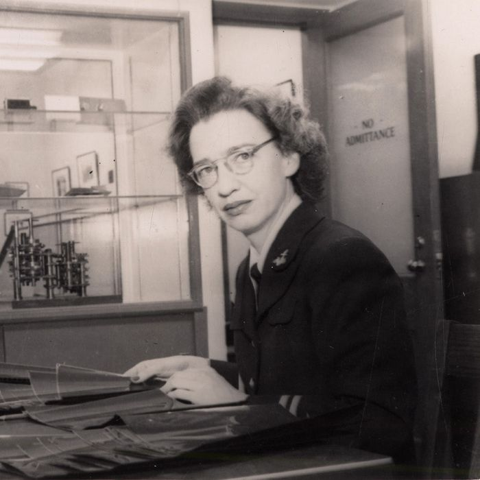
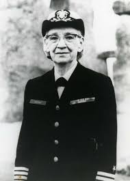
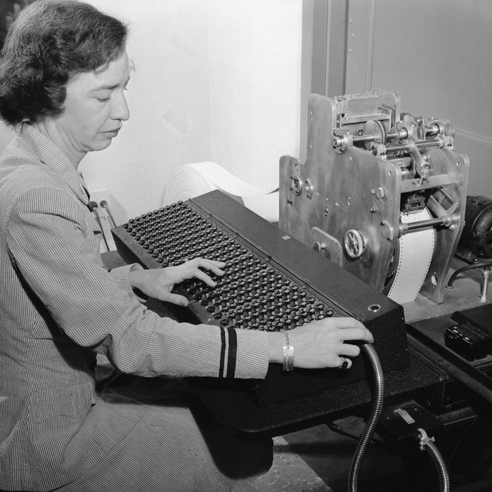

Grace Hopper was born Grace Brewster Murray, the oldest of three children. Her father, Walter Murray, was an insurance broker while her mother, Mary Van Horne, had a love of mathematics which she passed on to her daughter. Both Grace's parents believed that she and her sister should have an education of the same quality as her brother.
She spent the summers with her cousins in their cottage on Lake Wentworth in Wolfeboro, New Hampshire playing games such as kick-the-can, hide-and-seek and cops-and-robbers. Her hobbies included needlepoint, reading and playing the piano. There were certainly signs in Grace's childhood of her fascination with machines as it was told that, when she was seven years old, she took her alarm clock to pieces to find out how it worked. Unable to reassemble it, she took to pieces the other seven clocks she found in the house before her mother discovered what was happening.
Grace was educated at two private schools for girls, namely Graham School and Schoonmakers School both in New York City. Intending to enter Vassar College in 1923 she failed a Latin examination and was required to wait another year. She spent the academic year at Hartridge School in Plainfield, New Jersey then entered Vassar College in 1924. She studied mathematics and physics at Vassar College graduating with a BA in 1928. After graduating she undertook research in mathematics at Yale University.
In 1930 Grace Murray married Vincent Foster Hopper, an English teacher from New York University. A Vassar College Fellowship allowed her to study at Yale University and, also in 1930, Yale awarded her an MA. In 1931 she began teaching mathematics at Vassar College as an instructor in the Department of Mathematics and she continued on the staff there until 1943, having been promoted by that time to an associate professorship. Hopper was awarded her doctorate by Yale University in 1934 for a thesis New Types of Irreducibility Criteria which was supervised by Øystein Ore. Hopper attended New York University as a Vassar Faculty Fellow in 1941.
Hopper wanted to join the military as soon as the United States entered World War II. However her at 34 she was too old (and not heavy enough for her height) to enlist and anyway as a mathematics professor her job was considered essential to the war effort. However she was determined to join the Navy and, despite being told that she could serve her country best by remaining in her teaching post at Vassar College, she eventually persuaded the Naval Reserve to accept her in 1943 and she also persuaded Vassar College to grant her leave.
After initial training at Midshipman's School, after which she was commissioned a Lieutenant, Hopper was assigned to the Bureau of Ordnance Computation Project at the Cruft Laboratories at Harvard University. From 1944 she worked with Aiken on the Harvard Mark I computer.
On her arrival at Cruft Laboratory she immediately encountered the Mark I computer. For her it was an attractive gadget, similar to the alarm clocks of her youth; she could hardly wait to disassemble it and figure it out. ... Hopper became the third person to program the Mark I.
Aiken gave her as a first programming task immediately she arrived at Harvard which was to:-
Compute the coefficients of the arctan series by next Thursday.
By the end of the war, Hopper was working on the Harvard Mark II computer. It was in this machine that the first actual "computer bug" was found: a moth which shorted one of the 17 000 relays in the machine.
In 1946 Hopper ended her active duty with the Navy but remained a duty reservist. She resigned her post at Vassar College so that she could remain at Harvard where she was appointed a Research Fellow in Engineering Sciences and Applied Physics in the Computation Laboratory. She continued to work on the Mark II, then later on the Mark III computer.
In 1949 Hopper joined the Eckert-Mauchly Computer Corporation as a Senior Mathematician and there she worked with John Eckert and John Mauchly on the UNIVAC computer. She designed an improved compiler while working for the company and was part of the team which developed Flow-Matic, the first English-language data-processing compiler [12]:-
In 1952 she had an operational compiler. "Nobody believed that," she said. "I had a running compiler and nobody would touch it. They told me computers could only do arithmetic."
Hopper's reason for designing a compiler was, she wrote later, because she was lazy and hoped that the introduction of compilers would allow the computer programmer to return to being a mathematician. Indeed it may seem obvious to us today that this would be the route forward for computers but it was an extremely far sighted idea from Hopper. In fact thinking about how computers have developed, particularly with systems such as Mathematica and Maple available today, one sees the rather remarkable vision that Hopper had of how computers would become such an important tool for mathematicians.
In 1950 the Remington Rand Corporation had acquired the Eckert-Mauchly Computer Corporation and changed its name to the UNIVAC Division of Remington Rand. Hopper became a Systems Engineer and Director of Automatic Programming Development of the UNIVAC Division. She continued her work on compilers, publishing her first paper on that topic in 1952. She then participated in the work to produce specifications for a common business language. Since Flow-Matic was the only existing business language at that time, it was inevitable that it should provide the foundations for the specification of the language COBOL (COmmon Business-Oriented Language) which eventually came out in 1959. She had another important aim relating to compilers, namely that there should be standardisation. Her aim was that there should be international standardisation of computer languages and she strongly advocated validation procedures.